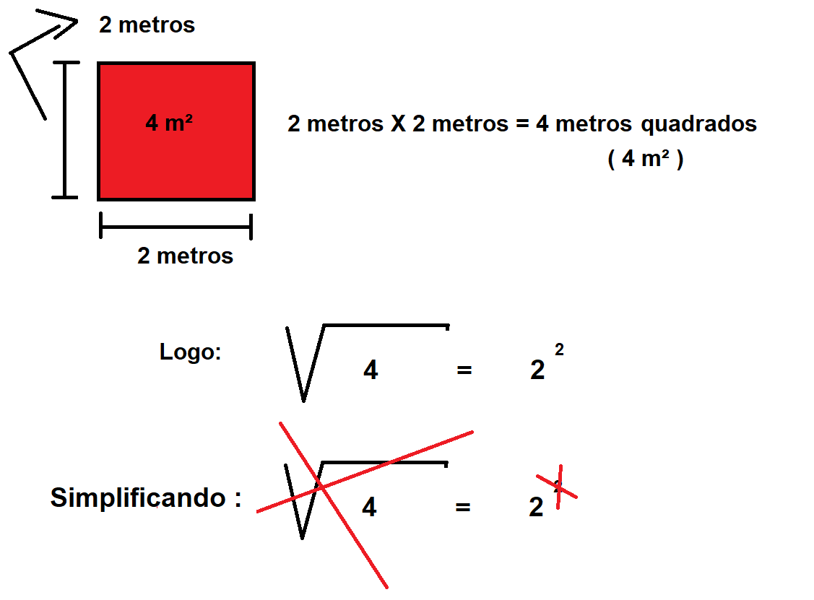

Conteúdo
Definição
Operação Inversa deElevar um númeroao Quadrado
Elementos da Raíz Quadrada
Índice
Radical
Radicando
Raíz
Cálculo
Tabela com cálculos
Sabemos que um quadrdado tem seus 4 lados iguais, e que
a área de um quadrado é calculada pela multiplicação da medida de sua frente vezes a medida de sua profundidade, vejamos um exemplo,
se um quadrado possui as medidas de 2 metros cada lado, o resultado da área é igual a 2 X 2 metros = 4 m² de área (4 metros quadrados de área)
Se a potenciação de um número ao quadrado é a função inversa da raíz quadrada,
e vice-versa,
Podemos dizer que se sabemos o valor da área de qualquer quadrado podemos calcular a medida de cada lado dele através da raíz quadrada, certo ?
Calcule a medida de cada lado de um quadrado com área de 9 m² (9 metros quadrados)
Resposta
Calcule a medida de cada lado de um quadrado com área de 25 m² (25 metros quadrados)
Resposta